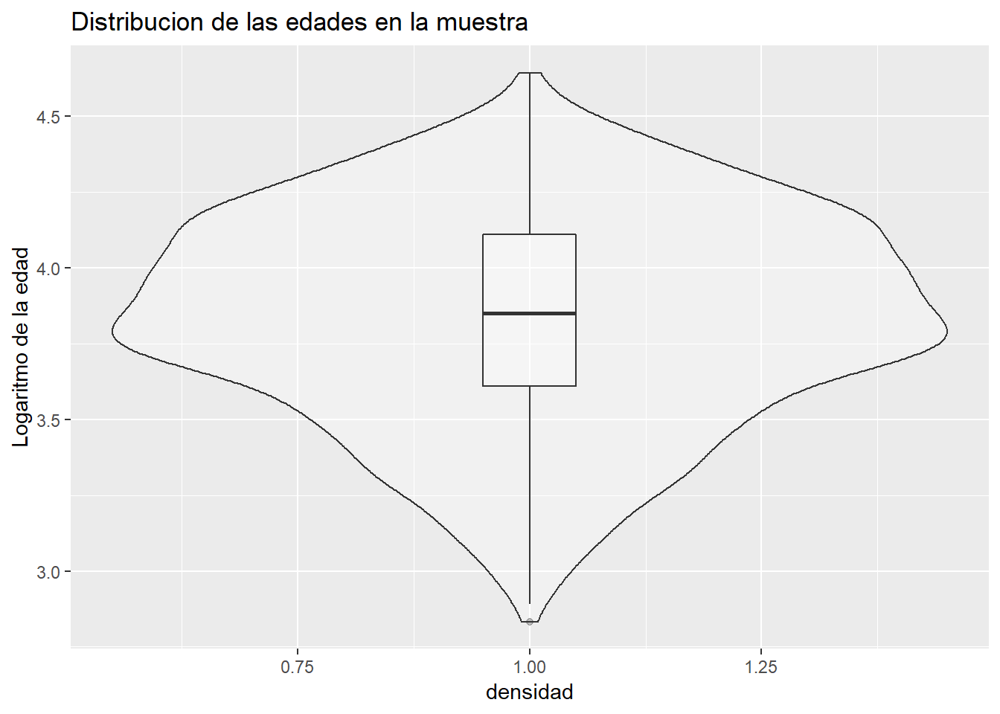
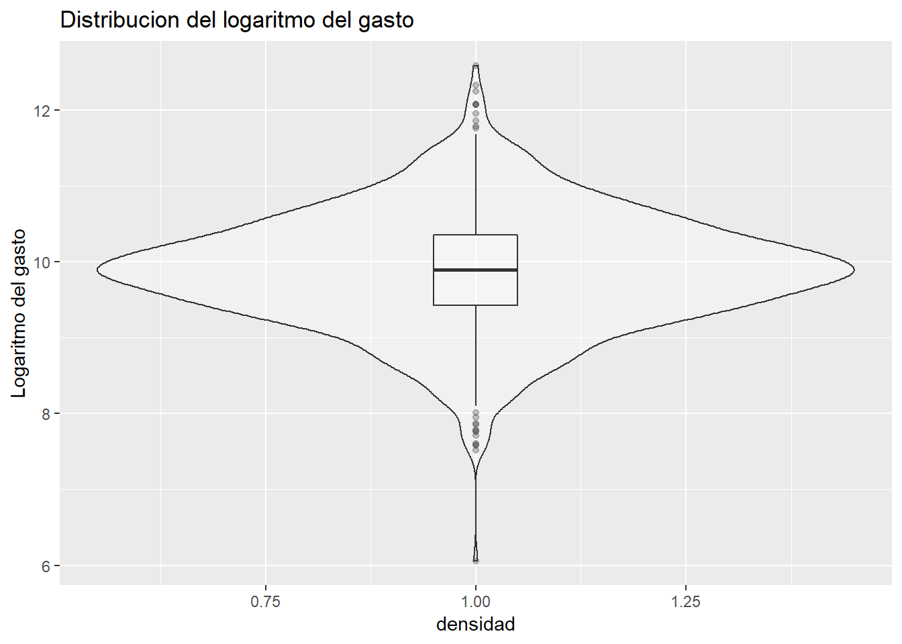
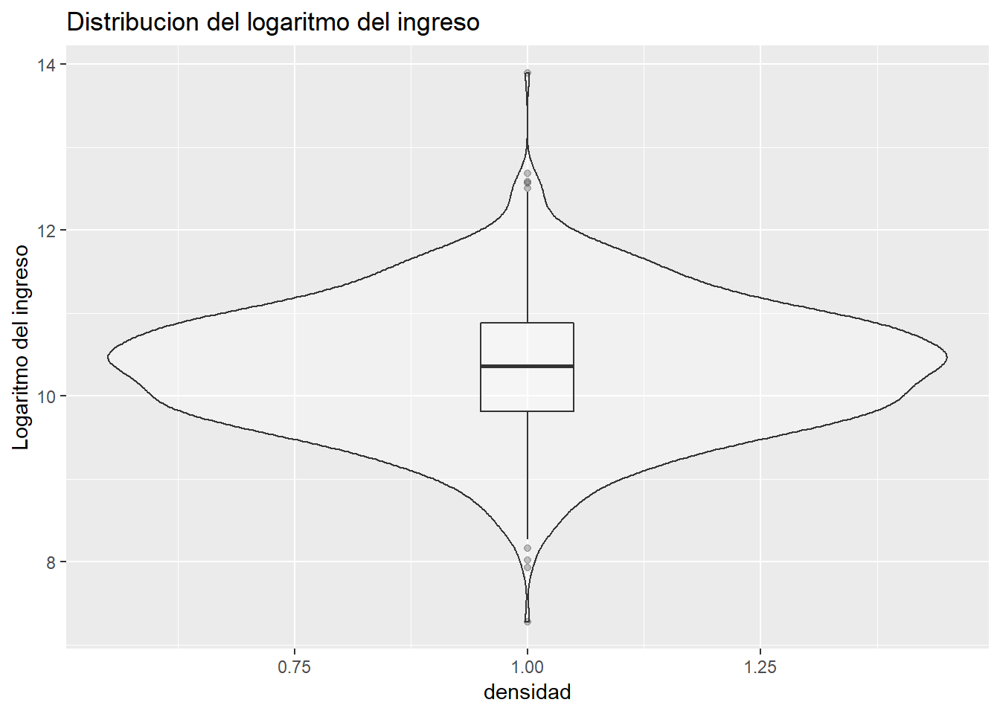
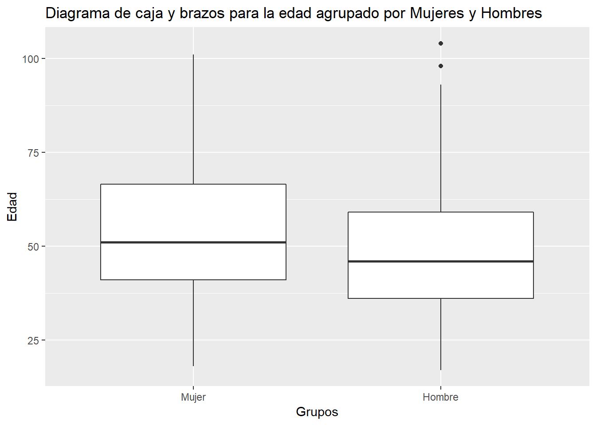
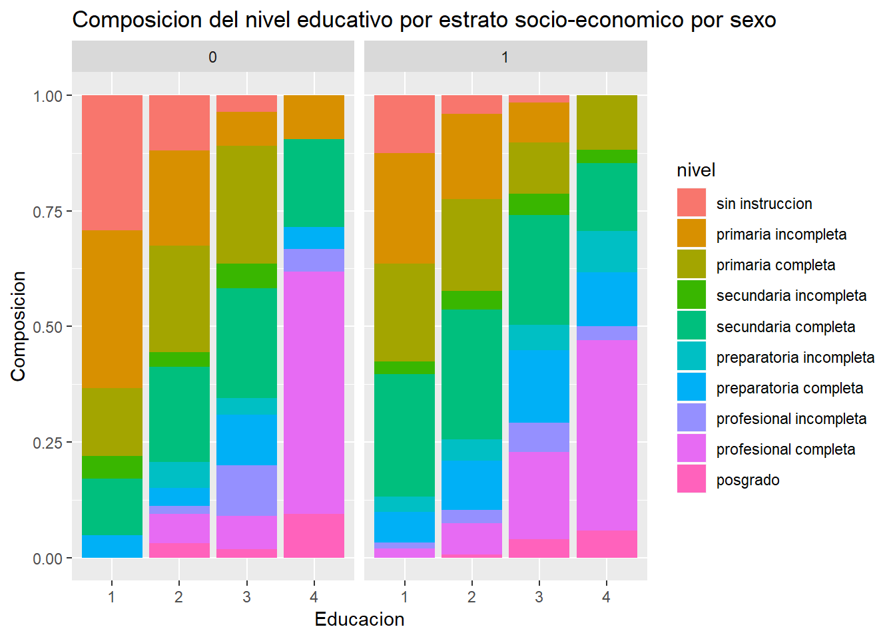
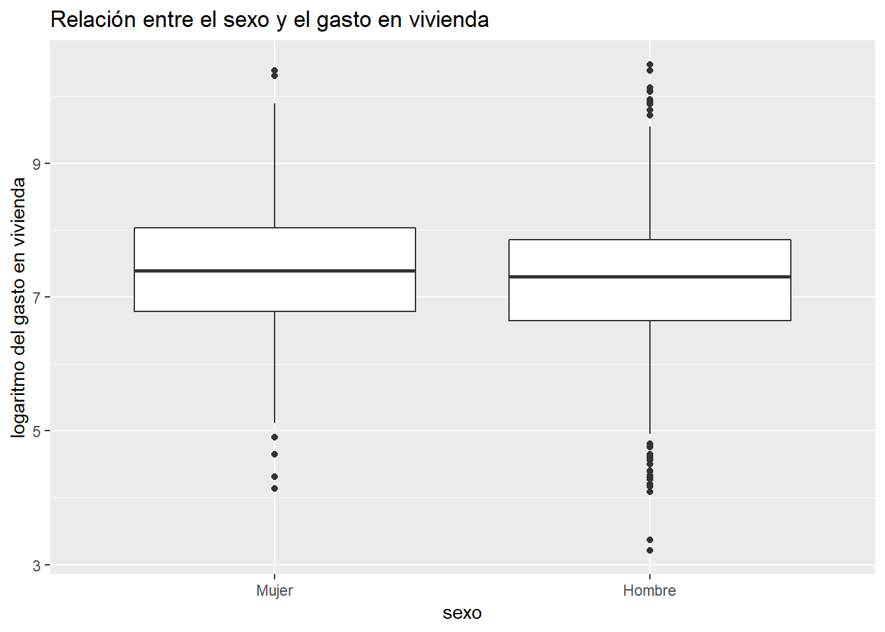
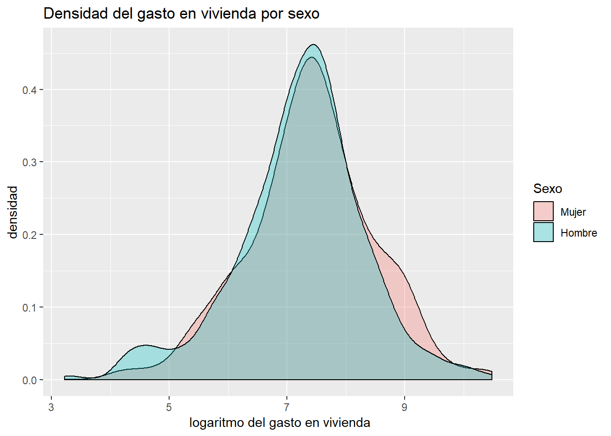
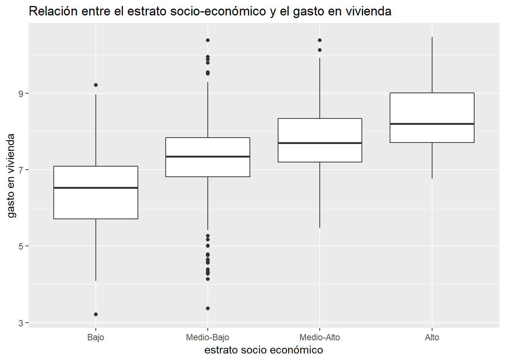

4 Análisis exploratorio de los datos y estadística descripitiva
El análisis exploratorio de los datos consiste en descubrir las relaciones entre las variables propuestas para el modelo, para que así se puedan presentar de forma correcta. Tambien es útil para conocer la estructura de los datos y conocer su consistencia. La forma en la que presento esta sección es primero, con estadísticas descriptivas de las variables numéricas, entre las cuales se incluyen media, moda, desviación estándar, cuartiles, mínimo y máximo. A continuación prosigo con gráficas de estadística univariada, entre los que se incluyen, diagramas de caja y brazos, histogramas y gráficos de densidad esto con el propósito de conocer la forma, el sesgo y los parámetros de localización de la distribución de estas variables. Despues exploro algunas relaciones multivariadas entre distintos parámetros categóricos y numéricos, esto con el fin de conocer las características de la población.
4.1 Estadística Descriptiva
| datos2 (N = 969) | |
|---|---|
| Edad del jefe de familia | |
| min | 17 |
| median (IQR) | 47 (37.00, 61.00) |
| mean (sd) | 49.28 ± 16.41 |
| max | 104 |
| Total de integrantes del hogar | |
| min | 1 |
| median (IQR) | 3 (2.00, 5.00) |
| mean (sd) | 3.65 ± 1.83 |
| max | 11 |
| Gasto general (escala logarítmica) | |
| min | 6.061783 |
| median (IQR) | 9.89 (9.42, 10.36) |
| mean (sd) | 9.89 ± 0.79 |
| max | 12.5858 |
| Ingreso (escala logarítmica) | |
| min | 7.280429 |
| median (IQR) | 10.36 (9.82, 10.88) |
| mean (sd) | 10.35 ± 0.80 |
| max | 13.8962 |
| Gasto en vivienda (escala logarítmica) | |
| min | 3.218876 |
| median (IQR) | 7.34 (6.69, 7.88) |
| mean (sd) | 7.27 ± 1.08 |
| max | 10.47658 |
4.2 Análisis Univariado






4.3 Análisis Multivariado



4.3.1 Relaciones entre regresores y variable explicada
4.3.1.1 Diagramas de relación lineal
4.3.1.2 Distribución del gasto en vivienda agrupado por sexo


4.3.1.3 Distribución del gasto en vivienda agrupado por total de integrantes del hogar
4.3.1.4 Distribución del gasto en vivienda agrupado por nivel educativo del jefe de familia
4.3.1.5 Distribución del gasto en vivienda agrupado por estrato socio-económico


4.4 Conclusiones del análisis exploratorio de de datos
- Todas las variables numéricas en escala logarítmica que componen el estudio presentan evidencia de ser distribuidas de forma unimodal y simétrica.
- Existen mas hombres jefes de familia que mujeres
- Los hombres asumen la jefatura de la familia a edades menores
- El estrato socio económico mas común al que pertenecen las familias mexicanas es el de Medio-Bajo sin distinción en el sexo del jefe de familia.
- El nivel de instrucción formal mas común de un jefe de familia perteneciente al sexo masculino es el de secundaria completa. En caso de que el jefe de familia pertenezca al sexo femenino el grado de instrucción mas comun es el de primaria completa.
- Mas del 50% de las personas en el estrato socio-económico bajo tienen instruccion formal entre “sin instrucción” y “primaria completa”.
- Mas del 50% de la personas en el estrato socio económico alto tienen estudios de entre profesional completa y posgrado
- La relación entre el logaritmo del ingreso y el logaritmo del gasto en vivienda es lineal, positiva y moderadamente correlacionada.
- La relación entre el logaritmo del gasto general y el logaritmo del gasto en vivienda es lineal, positivo y moderadamente correlacionado.
- La relación entre la edad y el logaritmo del gasto en vivienda es lineal, negativa y debilmente correlacionada.
- No hay evidencia de existir relación alguna entre el gasto en vivienda y los integrantes del hogar.
- No hay evidencia de la existencia de relación alguna entre el gasto en vivienda y el nivel educativo del jefe de familia
- Existe evidencia suficiente que apoye la relación positiva entre el gasto en vivienda y el estrato socio-económico al que pertenece una familia mexicana.